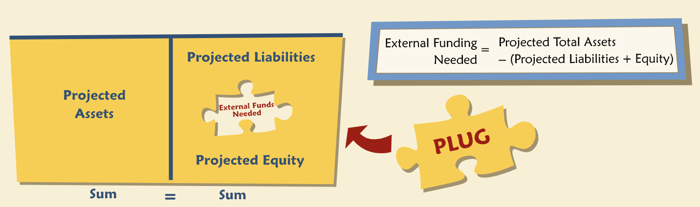

Financial Forecasting
Contents
Financial Forecasting¶
“Projected financial statements are often called pro forma statements. They can help address many questions a manager might be interested in; for example, what will our financing requirements be if we grow sales at 10% next year? If we grow at 10% for each of the next five years, what will happen to earnings per share if we increase leverage? Will a recession cause us to violate a covenant on our bank loan? And so forth.”
Basic Ingredients¶
“A business forecast may be simple or elaborate. For example, the gist of a forecast might be simply a 10% growth in sales. Or it might involve projecting market size, penetration, a certain product price, competitors’ reactions, and hence, market share. The forecast should be consistent with the business strategy articulated by top management.”
“Given a strategy and key elements of a business forecast, there are policies to be set in support of it, such as how to manage working capital accounts, how much to spend on marketing and promotions, on R&D, etc. Managers set these policies and the pro forma financial statements should incorporate them.”
“Economic factors such as inflation rates, interest rates, and exchange rates will affect the company’s forecasts.”
“Pro formas rely on accounting relationships such as the equivalence of of assets and liabilities plus equity, and the link between profit and retained earnings.”
“One of the accounting identities we use in constructing pro formas is that the balance sheet must balance. In other words, total assets must equal total liabilities plus equity. Another identity connects the balance sheet with the income statement. Beginning net worth plus retained earnings for the period must equal ending net worth, assuming no dividends.”
The Process¶
“Once formulated, forecasts should be scrutinized and tested. This process may be formal and rigorous or somewhat less formal, depending on how the forecast is to be used. Tests for reasonableness take many forms, such as comparisons to past performance, to competitors, to macroeconomic indicators or other external benchmarks. Ultimately, it helps to be skeptical and demand clear support.”
Bias, Error and Uncertainty¶
“Even good forecasts are fallible in the sense that they may not come true. In judging a forecast, it is important to distinguish between error and bias. Errors are simply mistakes, but over a long period and many forecasts, we would expect that the mistakes will tend to even out — sometimes things go better than expected and sometimes worse. In contrast, biases are systematic tendencies to under or overestimate, and as such they don’t cancel out even over a long period. Some biases arise unintentionally, perhaps through simple optimism or pessimism. Others may be deliberately built into a forecast, for example, to reflect a “best case” or “worst case” scenario, or to ensure conservatism. Most analysts will try to get rid of unintentional biases thorough testing and vetting of forecasts. Deliberate biases should be explained and supported.”
Pro Formas¶
“Pro forma balance sheets are projections of a company’s assets, liabilities, and equity. Pro forma income statements contain projections of revenues, costs, and profit. In almost all respects, pro forma financial statements are just like any regular statements, except that they haven’t happened yet and might never happen. Although hypothetical, they still follow all the usual accounting rules: balance sheets must balance; retained earnings must equal the prior balance plus net income minus dividends; net fixed assets must equal the beginning balance plus capital expenditures minus depreciation; and so forth.”
“To be informative, pro forma financial statements should be prepared with a clear mission. What am I trying to figure out? For example, a common goal is to estimate the amount of external funding required by proposed business plans. This can be expressed in a simple equation.” 
Percentage of Sales Forecasting¶
“One of the simplest approaches to preparing pro formas is “percent of sales” forecasting, so called because it projects many income statement and balance sheet accounts as a percent of sales. In its purest form, it simply scales all projections up or down with projected sales. If sales are expected to grow 10%, then so does everything else.”
Accounts Classification¶
A key step in computing pro forma statements is to determine which accounts we think should vary directly with sales. The percent of sales method classifies accounts into two categories:
Accounts that vary with a company’s sales include most current assets and liabilities, i.e. accounts payable, accounts receivable, accrued expenses, cost of goods sold excluding depreciation, etc.
Other accounts that are determined by deliberate managerial actions or perhaps according to existing contracts (such as debt agreements), and hence may not vary directly with sales.
Historical Variations¶
“For each of the accounts that vary with sales, a forecast is prepared based on each account’s expected relationship with sales. This relationship is often inferred from historical financial statements. So our first step is to estimate these historical relationships.”
“Using efficiency ratios rather than percent of sales values as assumptions makes it straightforward to state the forecasts in terms of management’s target efficiency ratios.”
Projecting Accounts¶
Accounts dependent on sales are projected using the percent of sales forecasting.
Interest Expense¶
“In essence, we take a guess at interest expense, and then see what the guess implies about funding needs. Then we suppose the funding need is met with debt, and calculate a reasonable amount of interest on all the debt. We compare that “reasonable amount” to our initial guess. If they aren’t same, we change our guess and go through the process again, repeating until the “reasonable amount” of interest equals the guessed-at interest.”
Interest expense and revolving credits are used to calculate the plug. We revise our estimate for revolving credit and interest expense, and then recompute the plug till the plug is consistent with the estimated interest expense.
Seasonality¶
“Highly seasonal businesses generally compute quarterly, or even monthly, pro forma forecasts to make sure they have adequate funding at their seasonal peak without violating loan covenants.”
Uncertainty¶
“All business forecasts are characterized by uncertainty. A good analyst will use his or her knowledge of the business to identify key uncertainties and test key assumptions.”
“Three approaches are commonly used to test the reasonableness of forecasts: sensitivity analysis, scenario analysis, and simulation.”
Sensitivity Analysis¶
“Sensitivity analysis focuses on one variable and computes the effect on the plug figure (or some other item of interest) of a change in that single variable, assuming everything else stays constant.”
Scenario Analysis¶
“While sensitivity analysis studies changes in one assumption at a time, scenario analysis combines concurrent changes in many assumptions. The combinations of assumptions are intended to correspond to particular scenarios, chosen either because they are particularly likely or particularly salient in some other way.”
Simulation¶
“Simulations are sophisticated statistical analyses performed by computer programs using both the mathematics of probability and statistics and raw computing power. A common version of this sort of analysis is called Monte Carlo Simulation.”
“To set up a simulation, we assign a probability distribution to one or more forecast variables.”
“The mean of this distribution may be interpreted as the expected value of the variable, given the probability distribution for sales growth. Complex simulations involve many variables and probability distributions, along with estimates of covariability. Properly constructed and interpreted, simulation analysis is a powerful technique for understanding how uncertainty in one or more inputs affects the probability distribution of the output.”